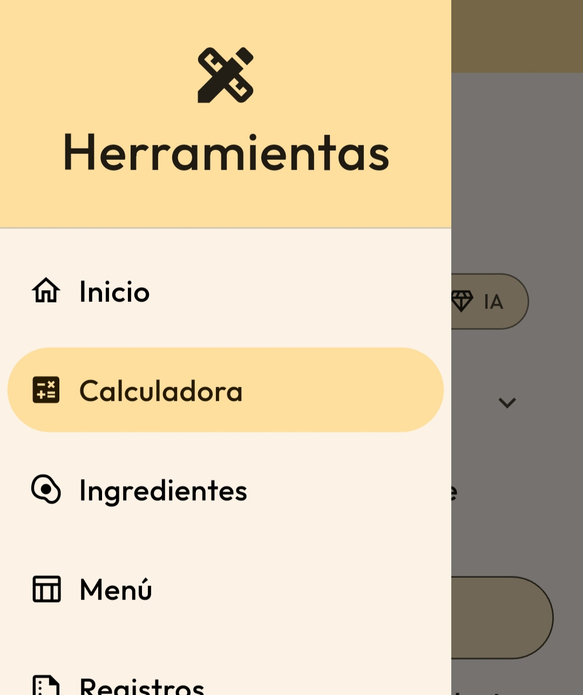
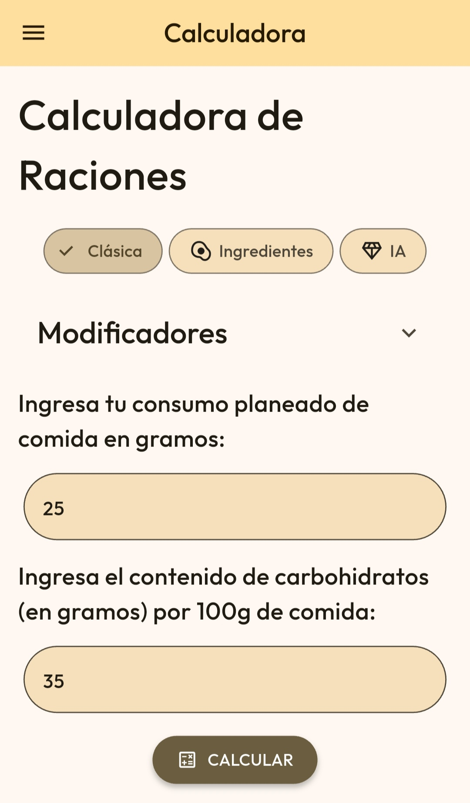
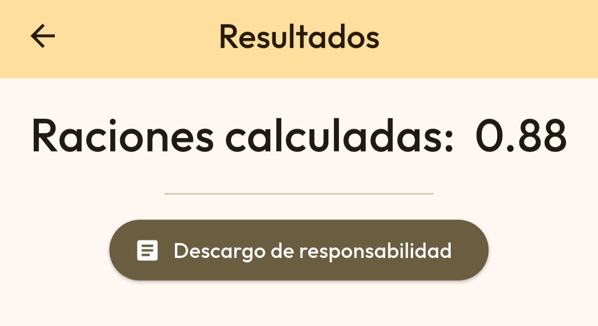
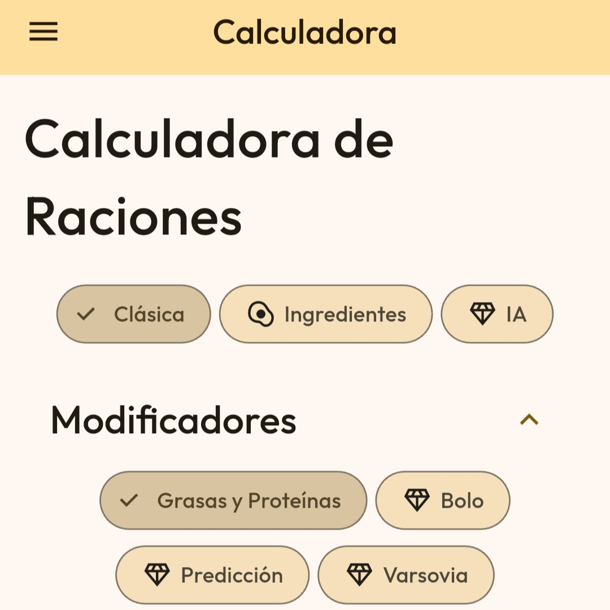
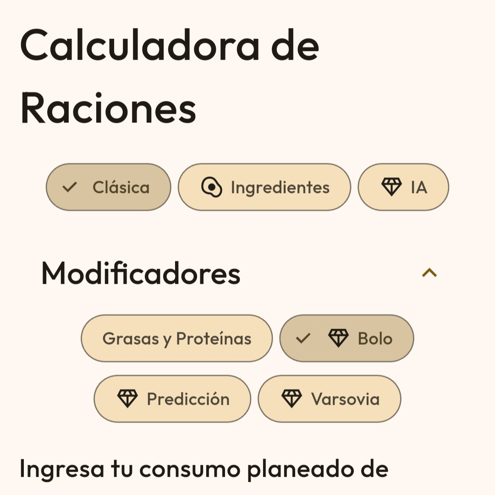
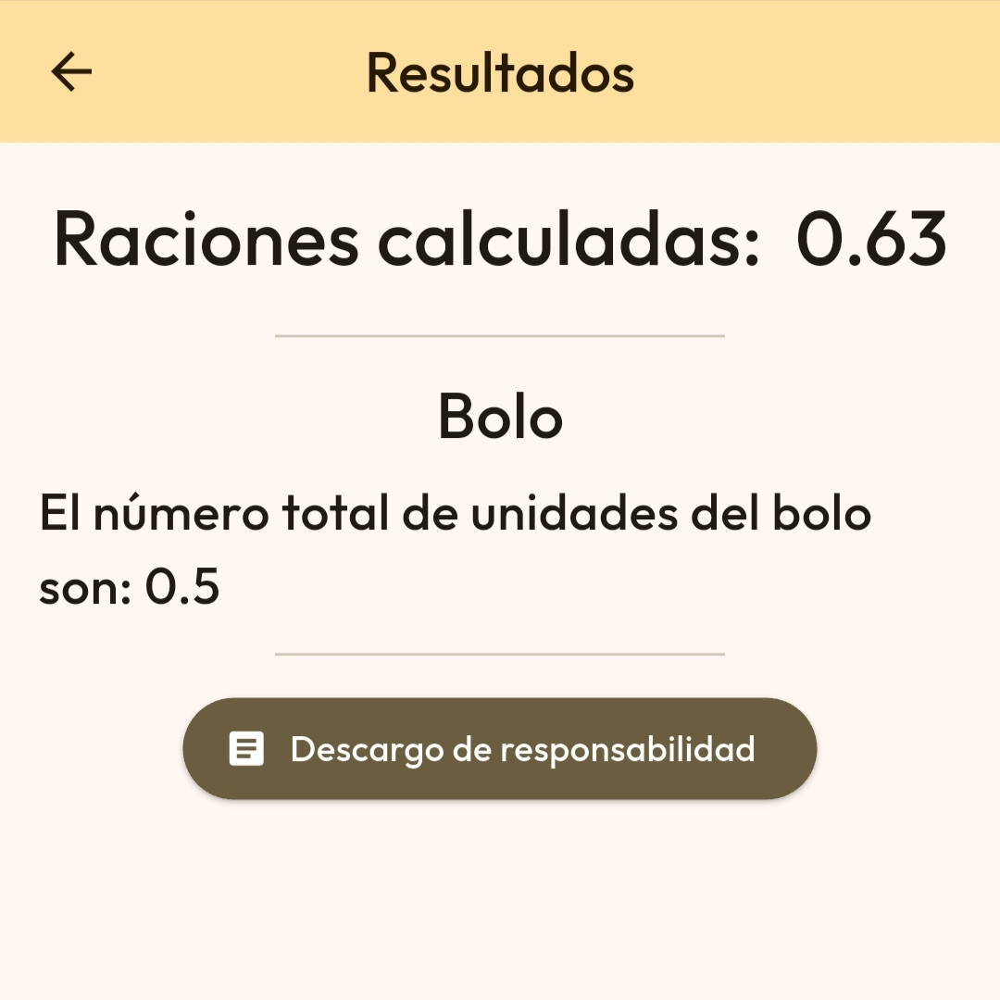
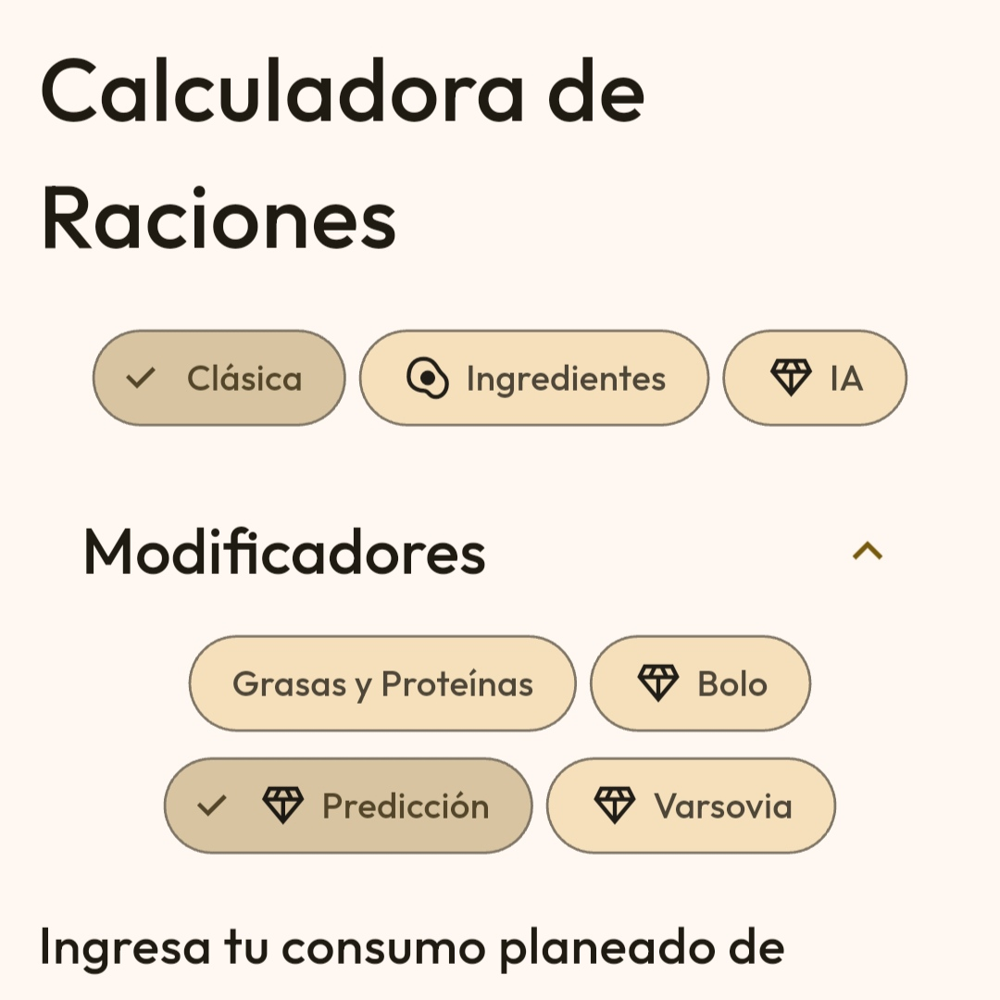
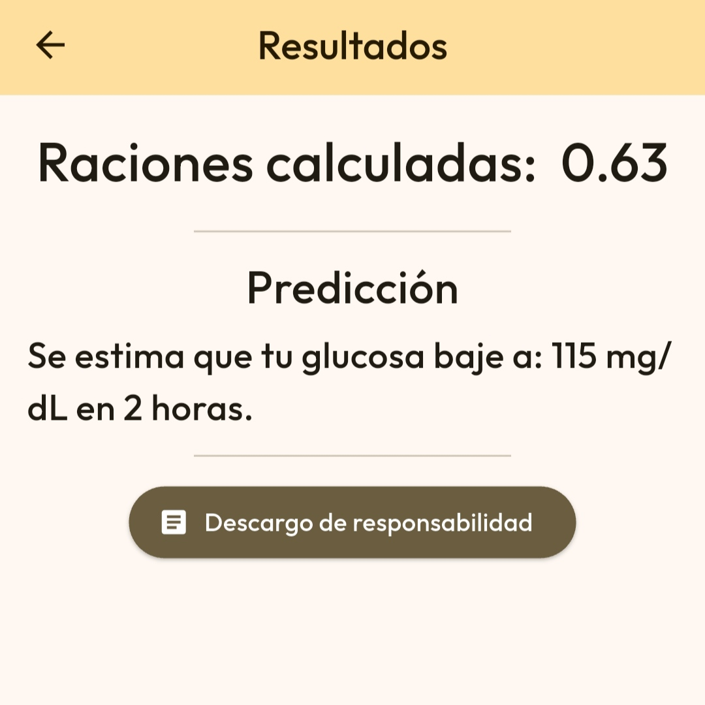
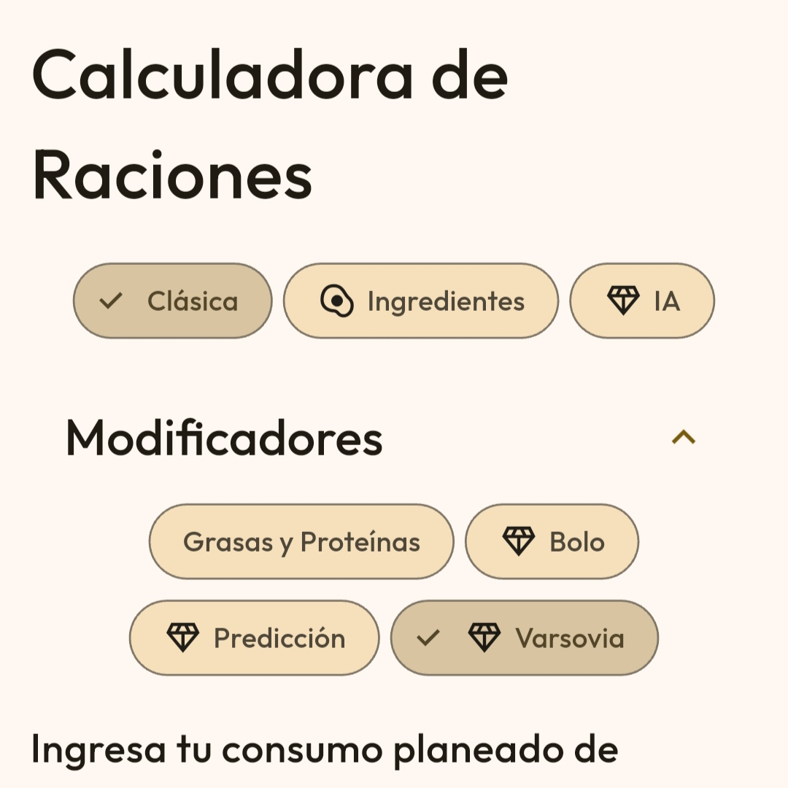
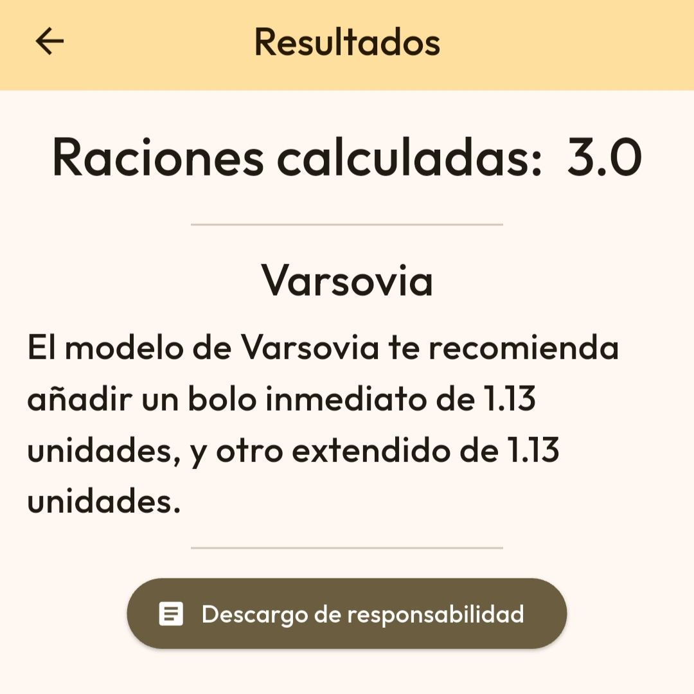

Las raciones (también llamadas intercambios) son la unidad de medida estándar utilizada en la diabetes tipo 1
para simplificar el recuento de hidratos de carbono (carbohidratos) que se consumen en una comida.
A diferencia de las proteínas y las grasas, los hidratos de carbono son el nutriente que más impacto directo
tiene en los
niveles de glucosa en sangre. Convertir la comida a raciones permite calcular la dosis exacta de insulina rápida
que el cuerpo necesita.
Con Diazen, puedes calcular las raciones asociadas a un determinado peso de una manera sencilla usando
su apartado llamado "Calculadora". Puedes abrirlo pulsando el menú de arriba a la izquierda.

Encontrarás así diferentes tipos de calculadora. Nos enfocaremos en la marcada "Clásica", en el selector de arriba. Encontrarás debajo casillas que rellenar conforme a información nutricional. Para la calculadora clásica, esta información es:
Una vez la información ya está completada, puedes pulsar CALCULAR para ver el resultado del cálculo de la calculadora de Diazen.
Aunque los hidratos de carbono son el nutriente con mayor impacto directo sobre la glucemia, las proteínas y las
grasas también se tienen en cuenta porque alteran la velocidad de digestión y se transforman parcialmente en
glucosa de forma tardía.
Esta pequeña desviación se puede tener en cuenta en la propia calculadora si se extiende el apartado de
"Modificadores" y se marca el botón de "Grasas Y Proteínas". Este botón permite añadir la información
nutricional
de grasas y proteínas donde se indica, debajo de la casilla de Hidratos de Carbono

Al pulsar el botón "CALCULAR", calculará de nuevo las raciones teniendo en cuenta la nueva suma.
Un bolo es la dosis puntual de insulina rápida o ultra-rápida que se administra en un momento concreto para un
fin específico, a diferencia de la insulina basal, que cubre las necesidades energéticas de fondo durante las 24
horas.
Tipos principales de bolo
- Bolo de comida: La insulina que se inyecta justo antes de comer para compensar los hidratos de
carbono (y las proteínas/grasas) de los alimentos.
- Bolo de corrección: La insulina que se administra cuando la glucemia en sangre está por encima del objetivo,
para devolverla a rangos normales independientemente de si se va a comer o no.
En nuestra calculadora, se puede marcar el modificador "Bolo", que ayuda a calcular el bolo necesario.
Para usar esta función, debes activar Apex de manera gratuita y completar tu perfil en
Ajustes

Ahora, rellena todos los datos requeridos en el apartado inferior.
En este ejemplo, las unidades de insulina requeridas serían 0.5. Si la insulina objetivo está debajo de la actual, se incluye el bolo corrector en la suma.
Las predicciones permiten conocer cuánto subirá o bajará la glucosa con una estimación simple. En Diazen,
podemos
estimar la subida o bajada de glucosa a dos horas, marcando el modificador "Predicción". Este modificador es el
complemento perfecto del modificador "Bolo", porque usa exactamente los mismos parámetros. Puedes marcar los dos
para obtener el doble de información en base a los mismos parámetros.
Igual que con "Bolo", debes tener activo Apex y configurado tu perfil en
Ajustes.

Ahora, rellena todos los datos requeridos en el apartado inferior.
Esta es una estimación educativa. No tiene en cuenta la absorción retardada de las proteínas y grasas.
Este modelo calcula la insulina adicional necesaria para cubrir el efecto hiperglucemiante retardado de las
proteínas y las grasas cuando se consumen en grandes cantidades. Se activa opcionalmente si la comida supera
ciertos umbrales.
Si la comida contiene más de 40 g de grasa o más de 25 g de proteína (en Diazen), se considera que
tiene un impacto significativo. En este caso, se activa el modelo de Varsovia. En cualquier otro caso, no
suele ser necesario este cálculo.
Marca el modificador "Varsovia" en el apartado de modificadores.
Igual que con "Bolo" y "Predicción", debes tener activo Apex y configurado tu perfil en
Ajustes.

El modelo de Varsovia determina un bolo extra que añadir para cubrir los efectos retardados. Este bolo se divide en dos partes, una instantánea, que se debe sumar al bolo normal del cálculo y otra retardada, que se puede poner de manera extendida. Es recomendable usar Varsovia junto con los modificadores "Bolo" y "Grasas y Proteínas".
Existen dos tipos de calculadora con utilidad:
- De Ingredientes: Permite reutilizar ingredientes, como se puede ver en
Ingredientes
- De IA: Solo disponible con Apex. Calcula las raciones estimadas en base a la
descripción dada.